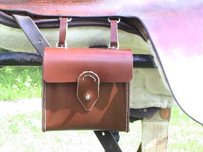
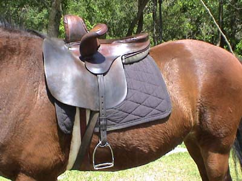
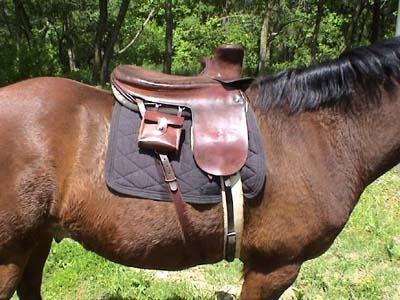
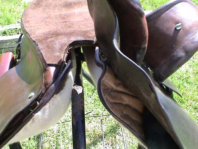
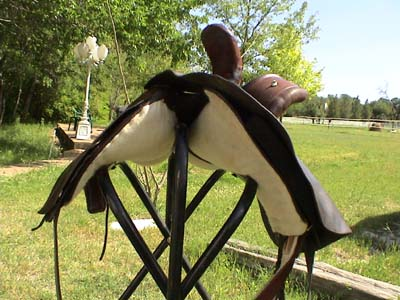

At the Sidesaddle Clinic,
I had to agree with the clinicians that my
really cool, old sidesaddle
wasn't going to work well for galloping and jumping.
It was more of a pleasure
saddle.
So, I got this Owen which
is reinforced for jumping.

The sandwich case that I made last
weekend.
All hand stitched. I have a small tin
in it, but hope to find one a little bigger.
(the first time I hit it with the whip
and the tin twanged, Thuy really responded)

It fits quite well to Thuy. At the
clinic they stuffed it to fit his back.

Besides making the sandwich case,
I also made myself a balance strap. My fingers hurt from all the stitching
and punching, but I'm close to being outfitted.

The cutaway gullet of the Owen. This
works better than the other saddle.

Wide enough to fit my cobby guy. I
haven't tried it yet on Emma, my Shire, or Bob, the Percheron cross. I
think it has a better chance of fitting Emma than Bob. He's rather narrow.